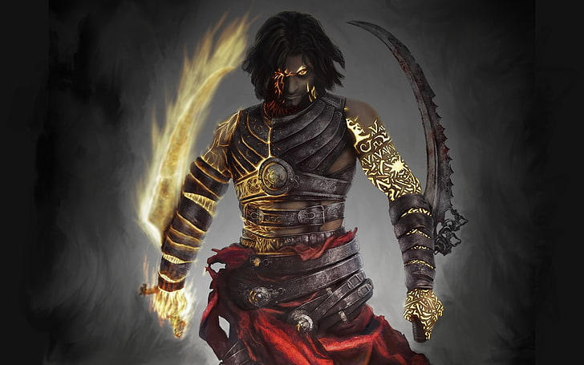
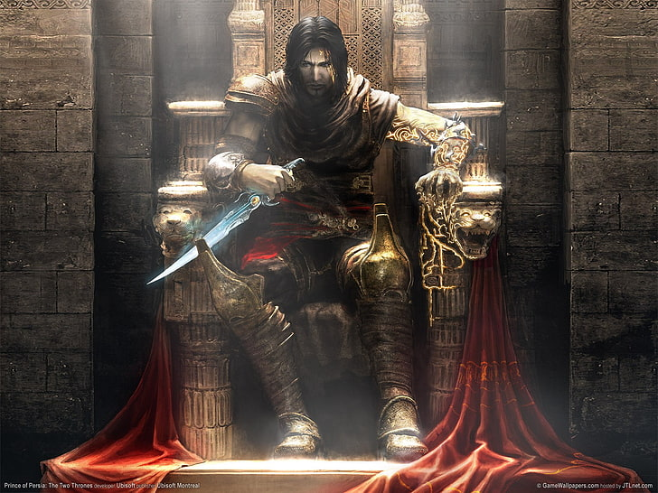
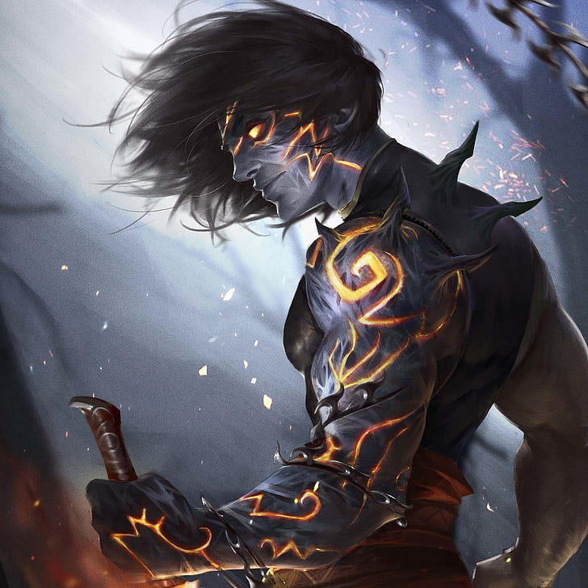
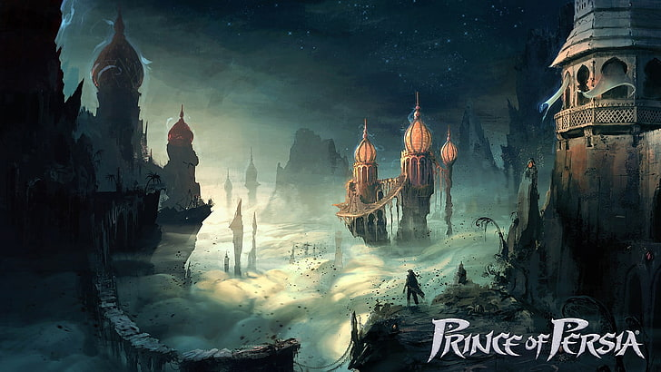

In 1989, Jordan Mechner unleashed a masterpiece. Prince of Persia introduced rotoscoped animation — filming real human motion and tracing frame by frame — delivering fluid, lifelike movement never seen before in games. Published by Brøderbund, the game became a watershed for cinematic platformers. Every leap, clash, and precarious ledge felt visceral and dangerous. It didn't just influence games; it redefined interactive tension and elegance. The 60-minute time limit (real time) created relentless pressure, while one-hit-kill sword fights demanded precision. Prince of Persia wasn't just a game; it was a piece of interactive cinema.

The evil Vizier Jaffar seizes the palace, forcing the princess into an unwanted marriage. You are the lone hero — imprisoned in the dungeons, with only 60 minutes to escape, survive deadly traps (spikes, collapsing tiles, guillotines), and defeat Jaffar's elite guards. Time flows relentlessly, displayed as a real-hour countdown — a mechanic that elevated tension to new heights. The princess, no passive damsel, drops hints and a crucial potion to aid you. The story blends Persian mythology with a desperate race against fate. Will you reach the tower before the hourglass empties? The emotional narrative, rare for its time, elevated the game to legendary status.
The original included memorable elements: skeleton guards that rise from the dead, mirror puzzles where the Prince must confront his own shadow, and the infamous spikes of doom. Level design encourages experimentation but punishes carelessness — a true test of skill and memory. The game's fluid movement set a standard that inspired later classics like Tomb Raider and Assassin's Creed parkour.

After its Apple II debut, Prince of Persia spread like wildfire across Amiga, NES, Genesis, SNES, DOS, Mac, Game Boy, and more than 20 platforms. It became a worldwide phenomenon, selling over 2 million copies in its first decade alone. Critics praised the cinematic atmosphere, fluid sword fighting, and haunting music. Computer Gaming World called it "a masterpiece of tension and design." The game set a benchmark for platformers and inspired a generation of developers, including the creators of Tomb Raider and Assassin's Creed. In 1992, the sequel "Prince of Persia 2: The Shadow and the Flame" expanded the saga, but the original remains untouched in its purity of design, still played and speedrun today.
Jordan Mechner filmed his brother David performing jumps and sword swings, then traced each frame by hand onto paper. He digitized them into the Apple II's limited 128KB RAM. This obsessive process gave the Prince realistic weight — every stumble, leap, and fall felt alive. The technique later influenced Another World and Flashback, defining early cinematic gaming.
Ubisoft acquired the rights and launched Prince of Persia: The Sands of Time — a 3D masterpiece introducing time-rewinding mechanics, acrobatic parkour, and a poignant story of betrayal and redemption. It revitalized the franchise, earning numerous Game of the Year awards. It spawned the darker Warrior Within (2004) and the epic conclusion The Two Thrones (2005). The 2008 reboot offered a cel-shaded artistic experiment.
🏆 AIAS Hall of Fame · 🏆 GameSpot "Greatest Games of All Time" · 🏆 Strong National Museum of Play inductee. Over 20 million copies sold across all versions. The 2010 Disney film adaptation starring Jake Gyllenhaal introduced the Prince to a new generation. In 2024, Prince of Persia: The Lost Crown returned to 2D roots with metroidvania flair, garnering 88+ Metacritic scores. Speedrunners still finish the original 1989 game in under 18 minutes.

Unlike many games of the era, the princess is not just a reward. She actively helps the Prince: she throws down a crucial sword when he is captured, warns about traps, and during the final duel with Jaffar, she distracts the Vizier, allowing the Prince to strike. Their relationship is built on mutual respect. The original ending (depending on the princess's health) can be tragic or triumphant, adding emotional depth. The climax against Jaffar is legendary: a mirrored duel where the princess's aid is essential. The final minutes remain iconic: two heroes, an hourglass, and true love deciding the fate of Persia. This character set a new standard for female representation in action-adventure games.
Trivia: The famous falling scream was recorded by Mechner himself. Potion effects are randomized, adding replayability. The original music by Francis Mechner (Jordan's father) gave a haunting atmosphere on certain platforms. The game's development took over three years — a labor of love.
Ubisoft's triumphant return to 2D metroidvania style — praised for its fluidity, puzzles, and deep respect for the original spirit. The Prince's legacy continues to inspire new adventures, introducing the franchise to a new generation while honoring the 1989 classic.
The original 1989 version is still mastered by speedrunners who beat it under 19 minutes — a testament to timeless design and deep movement mastery. The community keeps the game alive on modern hardware via emulation and source ports.
From Iran to Japan, Prince of Persia resonated across cultures, blending Middle Eastern storytelling with universal themes of courage, time, and redemption. Fan remakes and dedicated forums continue to celebrate its Persian aesthetics and challenging gameplay.